第 24 章 高级索引技术
第 14 章介绍了索引概念和多种索引结构。其中 B+ 树等结构讲得较为详细，散列、写优化索引、位图索引和空间索引则只作了简要介绍。本章进一步讨论这些结构：首先详细介绍 LSM 树及其变体，再讲解位图索引，然后深入讨论空间索引中的四叉树和 R 树，最后介绍散列，重点是动态散列技术。
24.1 布隆过滤器
布隆过滤器（Bloom filter）是一种概率型数据结构，用很少的空间判断某个值是否属于一个集合，但有小概率将不属于集合的值也判为可能属于集合。布隆过滤器的基本结构是一张位图。集合有 n 个值时，位图的位数通常是 n 的几倍，一般取 10n；此外还配有若干散列函数。先假设只有一个散列函数 h()。
位图中的位最初全部为 0。随后逐个读取集合中的值，对元素 v 计算 h(v)，函数取值范围为 1 到 10n，并将位置 h(v) 的位设为 1。对集合中每个元素重复这一过程。检查值 v 是否在集合中时，同样先计算 h(v)。如果布隆过滤器的第 h(v) 位为 0，就能确定 v 一定不在集合中；如果该位为 1，v 则可能在集合中。即使 v 实际不存在，只要集合中的另一个值 v′ 满足 h(v′) = h(v)，这一位也会是 1。此时查询产生了假阳性，也就是误报。
为降低误报概率，布隆过滤器使用 k 个相互独立的散列函数 hᵢ()，i = 1,…,k，且 k > 1。对集合中的每个值 v，将所有 hᵢ(v) 对应的位设为 1。
查询某个值 v 时，用同样的 k 个散列函数确定 k 个位的位置。只要其中任意一位为 0，就能确定 v 不在集合中；否则只能判定它可能存在。例如，集合有 n 个值，位图有 10n 位，使用 k = 7 个散列函数时，误报率约为 1%。
24.2 日志结构合并树及其变体
如 14.8 节所述，对于写入量很大的负载，B+ 树索引效率不高，因此出现了其他索引结构。14.8.1 节简要介绍了日志结构合并树（LSM 树）及其变体，14.8.2 节介绍了缓冲树。本节进一步讨论 LSM 树及其变体。为便于说明，我们会重述 14.8.1 节的部分基础内容。
日志结构合并树（log-structured merge tree，LSM 树）的主要思路，是用较少的顺序 I/O 替代插入、更新和删除时的随机 I/O。我们先讨论索引的插入与查找，稍后再介绍更新和删除。
LSM 树由若干棵 B+ 树组成，包括一棵驻留内存的 L₀，以及磁盘上的 L₁、L₂、…、Lₖ；其中 k 表示层级。图 24.1 展示了 k = 3 时的结构。
查找索引时，分别查询 L₀、…、Lₖ，再合并结果。这里先假设没有更新或删除；存在这些操作时如何查找，稍后讨论。
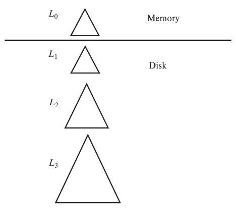
图 24.1 具有三个磁盘层的日志结构合并树。 Memory 表示内存，Disk 表示磁盘；L₀ 位于内存，L₁、L₂、L₃ 位于磁盘。
24.2.1 向 LSM 树插入数据
一条记录刚插入 LSM 树时，先进入内存中的 B+ 树 L₀。系统为 L₀ 分配较大的内存空间；树不断增长，填满分配的空间后，就需要将其中的数据移入磁盘上的 B+ 树。
如果 L₁ 为空，就把整棵 L₀ 写入磁盘，形成初始的 L₁。如果 L₁ 非空，则按键递增顺序扫描 L₀ 的叶层，并与同样按键递增顺序扫描的 L₁ 叶层条目合并。利用合并后的条目，自底向上构建一棵新的 B+ 树，用它替换原来的 L₁。两种情况下，L₀ 中的条目移至 L₁ 后，都将全部从 L₀ 删除；后续插入便可写入清空后的 L₀。
注意，旧 L₁ 叶层的所有条目都会复制到新树中，连没有任何更新的叶节点也一样。合并并不直接向现有 L₁ 节点插入条目。这有两个好处：
- 新树的叶节点顺序存放，后续合并可以避免随机 I/O。
- 叶节点被填满，避免页分裂造成的空间未充分利用。
但 LSM 结构也有代价：每次将一批 L₀ 条目移入 L₁，都要复制 L₁ 的全部内容。
如果树建立在分布式文件系统之上（21.6 节），将数据复制到新树往往无法避免，因为多数分布式文件系统不支持更新已经创建的块。
当磁盘索引远大于内存索引时，为使这种结构仍然有收益，将 L₁ 的最大大小设为 L₀ 目标大小的 k 倍。同样，每个 Lᵢ₊₁ 的最大大小为 Lᵢ 目标大小的 k 倍。某一层 Lᵢ 达到最大大小后，将其条目合并到下一层 Lᵢ₊₁；Lᵢ₊₁ 达到目标大小后，再合并到 Lᵢ₊₂，依此类推。
若 Lᵢ 的每个叶节点有 m 个条目，其中约 m/k 个条目会映射到 Lᵢ₊₁ 的同一个叶节点。选择 k 时，应使 m/k 保持在一个合理数值，例如 10。令 M 为 L₀ 的大小，则 Lᵢ 层树的大小为 kⁱM。若索引条目总大小为 I，总层数 r 大约为 logₖ(I/M)。
现在估算多层 LSM 树的 I/O 次数。在每个 Lᵢ 层，一次 I/O 可以完成 m/k 次插入；另一方面，每个条目都要在每一层插入一次。因此，每次插入总共需要 (k/m)logₖ(I/M) 次 I/O。
只要层数 r = logₖ(I/M) 小于 m/k，使用 LSM 树的每次插入所需的总 I/O 次数，就少于直接向 B+ 树插入。
例如，若 r = 10、k = 10，内存索引需要大于整个索引的 1%，才能在插入 I/O 次数上获益。与前面一样，即使 L₀ 小得多，仍可获得减少寻道的收益。
译注：此处原书给出的 r = 10、k = 10 与“内存索引大于 1%”不符合前面的 r = logₖ(I/M) 关系；按该式，r = 10、k = 10 对应 M/I = 10⁻¹⁰。这里保留原书数值，不能据此推出 1% 的结论。
如果层数大于 m/k，即使 I/O 次数没有减少，顺序 I/O 替代随机 I/O 仍可能节省开销。24.2.4 节将介绍一种进一步降低写入开销、同时增加读取开销的 LSM 树变体。
避免 LSM 树过大、层数过多的一种方法，是对关系按范围分区，为每个分区建立独立的 LSM 树。21.2 节已经介绍过，这在并行环境下很自然。按照 21.3.3 节的方法，分区一旦过大，还可动态细分。这样每棵 LSM 树都能保持较小规模，避免层数过多。代价是每个分区都需要在内存中维护自己的 L₀。虽然集中式系统也能使用这种方案，但更合适的环境是并行系统，因为它可以随着负载增加而增添处理节点等资源。
24.2.2 滚动合并
为简化讨论，前面假设某层填满后，才把全部条目合并到下一层。这会使合并期间 I/O 负载较高，而两次合并之间又有闲置的 I/O 能力。为避免这种情况，可以持续进行合并，这称为滚动合并（rolling merge）。
滚动合并每次只将 Lᵢ 的几个页合并到 Lᵢ₊₁ 的对应页，然后从 Lᵢ 删除这些页。Lᵢ 接近目标大小时就触发此操作，让它略微缩小，回到目标大小。Lᵢ 再次增长时，合并从上次停止位置之后的叶节点继续，保持顺序扫描；扫描至树尾后，再从开头开始。记录持续地从一层移往下一层，因此称为滚动合并。
每次合并的叶节点数量应足够多，使寻道时间相对于磁盘读写的数据传输时间较小。
24.2.3 处理删除与更新
前面只讨论了插入与查找。处理删除时，系统插入一条新的删除条目（deletion entry），指明要删除哪个索引条目，无须立即找到并删除原条目。
插入删除条目的过程与插入普通索引条目相同。
查找则需要增加一步。查找从所有树获取条目，并按键的顺序合并。某个条目若有对应的删除条目，两者的键相同，查找就会同时遇到它们。发现删除条目后，必须滤掉待删除的原条目，不能将其返回。
合并两棵树时，如果一棵树包含原条目，另一棵包含相应的删除条目，由于键相同，合并过程中会将二者匹配，并一并丢弃。
更新的处理方式类似：插入一个更新条目。查找时，将更新条目与原条目匹配，并返回最新值。实际更新在树合并时完成：将一棵树中的原条目与另一棵树中对应的更新条目匹配，应用更新后丢弃更新条目。
24.2.4 分级合并索引
接下来介绍一种 LSM 树变体：每层可以有多棵树，插入方式也略有不同，其结构见图 24.2。沿用最早介绍这种结构的论文中的术语，我们称它为分级合并索引（stepped-merge index）。开发者通常把基本 LSM 树、分级合并索引及其他若干变体统称为 LSM 树。本书使用“分级合并索引”和“基本 LSM 树”来明确区分具体结构。
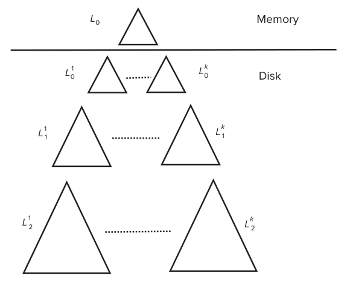
图 24.2 分级合并索引。 Memory 为内存，Disk 为磁盘。内存中维护 L₀，磁盘上每一层可以有多棵树；下标表示层级，上标区分同层各树。
24.2.4.1 插入算法
分级合并索引与基本 LSM 树一样，先把新数据存入内存中的 L₀。但当 L₀ 达到最大大小时，直接将它写到磁盘，不与 L₁ 合并。内存树再次填满后，再写出一棵树。磁盘上于是可能存在多棵 L₀，记为 L₀¹、L₀² 等。每棵 L₀ⁱ 都是 B+ 树，可以仅通过顺序 I/O 写入磁盘。
持续这样操作，磁盘上会积累大量与内存树同样大小的树。查找必须逐棵搜索，每次都产生独立的 I/O 开销，代价很高。
为限制查找开销，当 Lᵢ 层的磁盘树数量达到上限 k，就将该层所有树合并成下一层 Lᵢ₊₁ 的一棵新树。顺序读取 Lᵢ 层各树的叶节点，按键顺序归并，再采用标准的自底向上构建 B+ 树的方法建立新树。各棵树顺序读取，合并结果顺序写入，因此仍可避免随机 I/O。
多棵树合并成新树后，后续查询便可搜索新树；确认正在进行的旧树搜索全部结束后，即可删除原来的树。
与基本 LSM 树相比，分级合并索引的优点是索引条目在每层只写出一次。基本 LSM 树每次把 Lᵢ 合并到 Lᵢ₊₁，都要读出并重写 Lᵢ₊₁ 的全部内容，平均每条记录在每层读写 k/2 次，总 I/O 次数为 klogₖ(I/M)。分级合并索引则在每层写入一次，合并到下一层时读取一次，总计约 2logₖ(I/M) 次 I/O，因此更新成本明显较低。
插入一个条目所导致的各层累计写入字节数，除以条目本身的大小，称为写放大（write amplification）。计算 LSM 树和分级合并索引的写放大时，只需在上述 I/O 公式中忽略读取部分。对于 B+ 树，若每个叶页写回前平均只接受一次更新，则写放大为页大小除以索引条目大小。
例如，B+ 树一页容纳 100 个条目时，写放大就是 100。若 k = 5、I = 100M，层数约为 log₅(100) = 3，此时基本 LSM 树的写放大为 (5/2)×3 = 7.5，分级合并索引的写放大为 3。若 k = 10，层数为 log₁₀(100) = 2，分级合并索引的写放大为 2，基本 LSM 树则为 10。
还应注意，与基本 LSM 树一样，分级合并索引在插入期间也无须随机 I/O，而 B+ 树需要。因此，B+ 树的实际性能劣势比上述写放大数字所体现的更大。
合并还可进一步优化：将 Lᵢ 层的 k 棵树合并到 Lᵢ₊₁ 时，可以同时合入更低层 Lⱼ（j < i）的树，让这些条目直接跳过一个或多个层级。如果系统有空闲能力，某层即使未积累 k 棵树，也可以提前合并。当系统负载较轻、长期只有少量插入时，各层的树甚至可能最终合并为某个第 r 层的一棵树。
24.2.4.2 利用布隆过滤器查找
分级合并索引必须分别查找每棵树，因而查找负担高于基本 LSM 树。最坏情况下，每层要访问 k 棵树，总计 k×logₖ(I/M) 次树查找；基本 LSM 树最坏只需 logₖ(I/M) 次。
对于读取占比较高的负载，这种开销可能无法接受。例如，I = 100M、k = 5 时，分级合并索引一次查找需要遍历 15 棵树，基本 LSM 树只需遍历 3 棵。通常每个键只出现在一棵树中，因此只有一次遍历真正找到搜索键，其余遍历都会落空。
为降低点查找——查找一个给定键值——的成本，多数系统为每棵树配备一个布隆过滤器，按该树的键集合构建。查找键 v 时，先查询过滤器。如果过滤器表明 v 不存在，就确定它不在这棵树中，可以跳过；否则 v 可能存在，必须进一步搜索该树。
一棵树有 n 个元素时，使用 10n 位和 7 个散列函数的布隆过滤器，误报率约为 1%。查找索引中实际存在的键时，平均访问的树数量便只略多于一棵，性能只略低于普通 B+ 树。
只要内存足以容纳所有过滤器，布隆过滤器就能让点查找跳过大量树，效果很好。索引共有 I 个键值时，大约需要 10I 位内存。为降低内存开销，也可将部分布隆过滤器存放在闪存中。
范围查找无法利用这一优化，因为范围没有单一的散列值；必须分别访问所有树。
24.2.5 闪存上的 LSM 树
LSM 树最初用于减少硬盘的写入和寻道开销。闪存盘无须寻道，随机 I/O 的额外成本相对较低，因此避免随机 I/O 带来的收益，在闪存上没有那么重要。
不过，闪存不能原地更新。即使只修改页中的一个字节，也要将整页重写到新的物理位置；原来的位置最终还要擦除，而擦除成本较高。与传统 B+ 树相比，LSM 树变体能够降低写放大，因而在闪存上仍可带来明显的性能收益。
24.3 位图索引
14.9 节介绍过，位图索引是一种便于按多个键查询的专用索引。它最适合不同取值数量较少的属性。
使用位图索引前，关系中的记录需要连续编号，例如从 0 开始，而且给定编号 n，应能方便地找到第 n 条记录。如果记录等长，并分配在文件的连续块上，就很容易做到：可以直接把记录编号换算成块号和块内位置。
13.6 节介绍的列存储把各属性存成数组，能够高效访问任意第 i 条记录的某个属性。因此，位图索引很适合列存储。
本节使用关系 instructor_info 作为示例。其中 gender 属性只有 m（男性）和 f（女性）两个取值，income_level 属性则把收入分成五档：L1 为 0—9999，L2 为 10,000—19,999，L3 为 20,000—39,999，L4 为 40,000—74,999，L5 为 75,000 及以上。
24.3.1 位图索引结构
如 14.9 节所述，位图就是一个位数组。最简单的位图索引，为关系 r 的属性 A 的每个可能取值各建一张位图。每张位图的位数等于关系的记录数。如果第 i 条记录的 A 属性值为 vⱼ，则 vⱼ 对应位图的第 i 位设为 1；其余位设为 0。
在本例中，m 和 f 各对应一张位图。第 i 条记录的 gender 为 m 时，m 位图的第 i 位设为 1，其余位为 0。同样，f 位图中，gender 为 f 的记录对应位设为 1。
f 位图的其余位均为 0。图 24.3 展示了 instructor_info 关系上的位图索引。
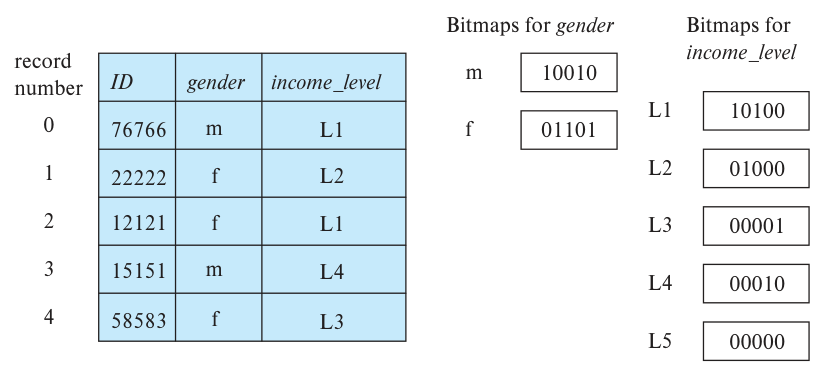
图 24.3 instructor_info 关系上的位图索引。 record number 为记录编号，ID 为教师编号，gender 为性别，income_level 为收入档位。右侧分别是性别和收入档位的位图，五个位依次对应编号 0—4 的记录。
接下来讨论位图何时有用。要取出所有值为 m 或 f 的记录，最简单的方法是扫描整个关系，再选择相应记录。位图索引未必能加快这种选择：虽然它可以只读取某一性别的记录，但这些记录很可能分布在文件的每个磁盘块中，最终仍需读取所有块。
位图索引主要在多个键共同参与选择时有用。假设除了 gender，还在前面定义的 income_level 上建立位图索引。
考虑查询收入在 10,000—19,999 美元之间的女性：
select *
from instructor_info
where gender = 'f' and income_level = 'L2';
执行这个选择时，取出 gender 为 f 和 income_level 为 L2 的两张位图，计算交集，即逻辑与。结果的第 i 位，只有在两张输入位图的第 i 位都为 1 时才为 1，否则为 0。图 24.3 中，f 的位图为 01101，L2 的位图为 01000，交集为 01000。
第一个属性有两个取值，第二个有五个，因而预计平均约十分之一的记录满足这两个属性上的联合条件。加入更多条件后，满足全部条件的记录比例可能很小。系统可以找出交集位图中所有为 1 的位，再读取对应记录。
如果满足条件的记录比例很大，直接扫描整个关系仍然更便宜。
位图的另一个重要用途，是统计满足某个选择条件的元组数量，这在数据分析中很常见。例如，要统计收入档位为 L2 的女性人数，只需求两张位图的交集，再数出结果中为 1 的位。这样仅凭位图索引就能得到答案，无须访问原关系。
位图索引通常比实际关系小得多。一条记录往往有几十到几百字节，而它在单张位图中只占一位，所以单张位图的空间通常不到关系的 1%。例如，记录长 100 字节时，单张位图只占关系空间的 1% 的八分之一。若属性 A 只有八个可能取值，完整位图索引由八张位图组成，总大小也只有关系的 1%。
删除记录会使编号序列出现空缺，因为移动记录或重新编号来填补空缺的代价太高。可以维护一张存在位图（existence bitmap）：第 i 条记录不存在时，第 i 位为 0，否则为 1。24.3.2 节将说明为什么需要它。插入也不能影响其他记录的编号，因此可以把新记录追加到文件末尾，或者使用已删除记录的位置。
24.3.2 位图运算的高效实现
计算两张位图的交集，可以用一个 for 循环，第 i 次迭代对两个第 i 位做与运算。利用大多数处理器支持的按位与指令，速度会快得多。一个机器字通常有 32 或 64 位，具体取决于体系结构。按位与指令接收两个字，返回每个对应位做逻辑与后的结果，一条指令就能同时计算 32 或 64 位的交集。
若关系有 100 万条记录，每张位图就有 100 万位，相当于 128 KB。假设机器字长为 32 位，只需要 31,250 条指令就能求出两张位图的交集，因此这种运算很快。
译注：原书将 100 万位近似写为 128 KB。按 8 位为 1 字节，准确值为 125,000 字节，即 125 kB，约 122.1 KiB；31,250 次 32 位运算的计算正确。
位图交集用于计算两个条件的与，位图并集则用于计算两个条件的或。实现过程相同，只需将按位与指令换成按位或指令。
补集运算可以计算条件的否定，例如 not (income_level = L1)。将每一位取反即可得到补集：1 变成 0，0 变成 1。乍看之下，只要对 L1 的位图取反，就能实现这个条件。但若有记录已经删除，这还不够：已删除记录在原位图中为 0，取反后却成为 1。属性值为 null 时也有类似问题；例如 income_level 为 null 的记录，在 L1 位图中为 0，取反后会变为 1。
为确保已删除记录对应的位仍为 0，必须将补集位图与存在位图求交集。同样，为正确处理空值，还需与 null 值位图的补集求交集。¹
统计位图中 1 的个数，可以使用一种高效的查表方法。维护一个含 256 项的数组，第 i 项记录整数 i 的二进制表示中有多少个 1。总计数初始为 0，依次读取位图的每个字节，用该字节的值作为数组下标，将查出的计数累加。所需加法次数为元组数的八分之一，因此效率很高。也可以用两个字节作下标，使用含 2¹⁶ = 65,536 项的更大数组，进一步加速，但要占用更多空间。
24.3.3 位图与 B+ 树
某些关系中，少数属性值出现得很频繁，其他值也存在但出现很少。这时可以将位图与普通 B+ 树索引结合。通常，B+ 树的叶节点为每个值保存一个记录列表，列出索引属性等于该值的所有记录。列表中的每个记录标识符至少占 32 位，通常更多。对于出现频繁的值，可以用位图替代列表。
假设某个值 vᵢ 出现在关系中十六分之一的记录里。关系共有 N 条记录，每个记录标识符为 64 位。位图每条记录只需一位，总共 N 位；列表则为每条具有该值的记录保存一个 64 位标识符，总共 64×N/16 = 4N 位，因此位图更省空间。在这个使用 64 位标识符的例子里，如果某值出现的比例低于六十四分之一，列表更省空间。
反之，如果超过六十四分之一的记录具有这个值，位图表示就更合适。
因此，对于出现频繁的值，位图可以作为 B+ 树叶节点中记录列表的压缩存储方式。
¹ 对 is unknown 等谓词的处理更复杂，通常还需要额外位图，记录哪些运算结果为 unknown。
24.4 空间数据索引
14.10.1 节指出，要高效访问空间数据，需要能有效支持范围查询和最近邻查询等操作的索引。该节简要介绍了 k-d 树、四叉树和 R 树，也说明了如何用 k-d 树回答范围查询。本节进一步讨论四叉树和 R 树。
空间索引除了要索引点，还要支持线段、矩形和其他多边形等空间区域。k-d 树和四叉树都有相应扩展，但线段或多边形可能跨越分割线，此时必须将其分割，在每个片段所属的子树中分别表示。同一个对象由此出现多次，会降低存储和查询效率。R 树正是为了高效索引这些结构而提出的。
24.4.1 四叉树
四叉树（quadtree）是表示二维数据的另一种结构。图 24.4 给出它划分空间的一个例子。
四叉树的每个节点对应一块矩形空间区域，根节点对应整个目标空间。每个非叶节点把自己的区域划分成大小相同的四个象限，并分别用四个子节点表示。叶节点包含的点数在 0 与某个固定上限之间；一个节点对应区域的点数超过上限时，就为它创建子节点。图 24.4 中，每个叶节点最多允许一个点。
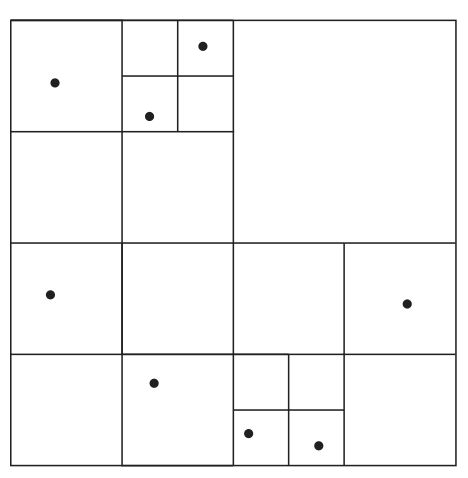
图 24.4 四叉树对空间的划分。 每次将区域等分成四个象限，图中叶区域最多包含一个点。
这种结构称为 PR 四叉树：它存储点（point），但按照区域（region）划分空间，而非依据实际存储的点集划分。存储数组或栅格信息时，可以使用区域四叉树（region quadtree）。若某节点覆盖区域中的数组值全部相同，该节点就是叶节点；否则继续等分成四个子区域，该节点成为内部节点。每个节点对应数组的一部分。叶节点对应的子数组，要么只有一个元素，要么包含多个值完全相同的元素。
24.4.2 R 树
R 树适用于索引点、线段、矩形和其他多边形。它与 B+ 树相似，都是平衡树，索引对象存放在叶节点中。R 树的每个节点对应一个矩形包围盒（bounding box）。叶节点的包围盒，是包含该节点全部对象、各边与坐标轴平行的最小矩形；内部节点的包围盒，则是包含所有子节点包围盒的最小轴对齐矩形。单个对象（如多边形）的包围盒，也定义为包含该对象的最小轴对齐矩形。
每个内部节点保存子节点的包围盒及其指针。叶节点保存索引对象，也可以额外保存各对象的包围盒，用于加速相交检查：若查询矩形与某对象的包围盒不相交，它就不可能与对象相交。如果索引对象本来就是矩形，则无须再存一份包围盒，因为两者相同。
图 24.5 中，实线表示被索引的矩形，虚线表示 R 树各节点的包围盒。为了图示清楚，包围盒内部画出了额外间隙；实际包围盒应更小，并紧贴所含对象。也就是说，包围盒 B 的每条边，都至少接触 B 内部的一个对象或子包围盒。
图 24.5 右侧是对应的 R 树，其中 BBᵢ 表示第 i 个包围盒的坐标。
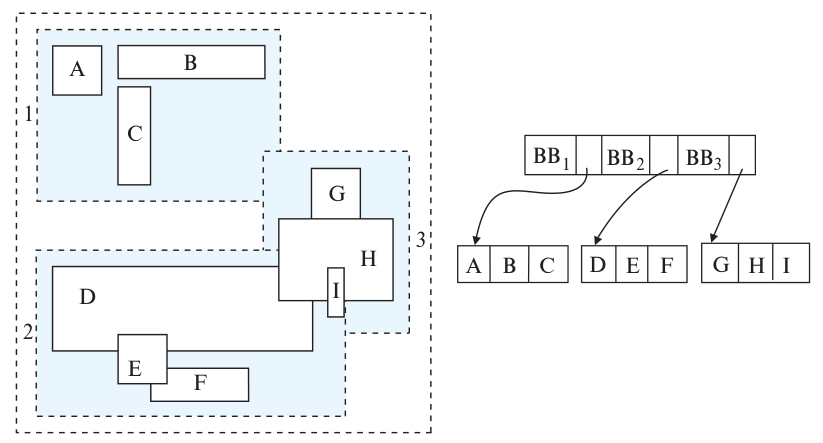
图 24.5 一棵 R 树。 A—I 是矩形对象，1、2、3 是相应节点的包围盒，BB₁、BB₂、BB₃ 保存其坐标。
下面介绍 R 树的查找、插入和删除。
查找。 兄弟节点的包围盒可能重叠，而 B+ 树、k-d 树和四叉树中，兄弟节点的范围互不重叠。因此，查找包含某个点的对象时，凡是包围盒包含该点的子节点都要继续搜索，可能需要沿多条路径查找。同样，要查找与给定对象相交的所有对象，就要进入包围矩形与该对象相交的每个节点。
插入。 插入对象时，需要选择一个叶节点。理想情况下，它还有空位，且其包围盒包含新对象的包围盒。但这样的节点未必存在；即使存在，寻找它也可能很贵，因为从根向下单走一条路径未必能找到：一个内部节点可能有多个子节点都满足包含条件，需要分别探索。因此，R 树使用启发式方法：从根向下遍历时，若存在包围盒包含新对象包围盒的子节点，就任意选择其中一个；否则选择与新对象包围盒重叠面积最大的子节点，继续向下。
到达叶节点后，如果叶节点已满，就进行分裂，必要时将分裂向上传播，过程与 B+ 树插入很相似。R 树插入同样保证树保持平衡，并维护叶节点和内部节点包围盒的正确性。
具体来说，叶节点的包围盒必须包含其中所有对象的包围盒；内部节点的包围盒必须包含所有子节点的包围盒。
R 树与 B+ 树插入的主要差别，是节点的分裂方式。在 B+ 树中，可以找到一个分界值，将条目大致各半分到两边。这种性质不能直接推广到多维：多维空间中，并非总能把条目分成包围盒互不重叠的两组。一种启发式方法，是把条目集合 S 划分成互不相交的 S₁、S₂，使两个包围盒的总面积最小；另一种方法是让二者的重叠面积最小。分裂后的两个节点分别存放两组条目。但求总面积或重叠面积的最小值，本身也可能很贵，因此通常采用开销更低的近似方法，例如二次分裂启发式（quadratic split heuristic），其名称来自运行时间与条目数的平方成正比。
二次分裂首先从 S 中选出两个条目 a、b，使它们放在同一节点时造成的包围盒空余面积最大：即包含 a、b 的最小包围盒面积，减去 a 和 b 的面积之和，所得差值最大。随后分别将 a、b 放入 S₁ 和 S₂。
之后每轮从剩余条目中选一个，加入 S₁ 或 S₂。对未分配的条目 e，令 iₑ,₁ 表示把它加入 S₁ 后包围盒增加的面积，iₑ,₂ 表示加入 S₂ 后增加的面积。每轮选择两者差异最大的一个条目：若 iₑ,₁ 小于 iₑ,₂，就放入 S₁，否则放入 S₂。换言之，每轮优先分配“偏好”最明显的条目。迭代持续到全部条目分配完，或者其中一组已足够大，必须把剩余条目全部加入另一组，才能使两组生成的节点都达到最低占用要求。后一种情况下，将所有剩余条目加入较小的一组即可。
删除。 可以采用类似 B+ 树的方法：节点占用不足时，向兄弟节点借条目或合并兄弟节点。另一种方法，是把占用不足节点的全部条目重新分配到兄弟节点，以改善 R 树中对象的聚集程度。
关于 R 树插入、删除，以及 R* 树和 R+ 树等变体的详细内容，可参阅参考文献。
R 树的存储效率高于 k-d 树和四叉树，因为每个对象只存一次，而且可以很容易保证各节点至少填满一半。
但 R 树查询可能需要搜索多条路径，速度可能较慢。四叉树上实现空间连接更简单，因为同一区域上的所有四叉树采用相同的划分方式。尽管如此，R 树存储效率较高，结构又与 B 树相近，因此 R 树及其变体在支持空间数据的数据库系统中得到了广泛使用。
24.5 散列索引
14.5 节介绍了散列和散列索引的基本概念，本节进一步展开。
24.5.1 静态散列
沿用 14.5 节的记号，以 K 表示所有搜索键值的集合，B 表示所有桶地址的集合。散列函数 h 是从 K 到 B 的映射。散列索引的桶中保存索引条目及记录指针；散列文件组织的桶中直接保存记录。除此之外，两者细节相同，下面不再逐一区分，统称为“散列索引”，包括散列文件组织和辅助散列索引。
图 24.6 展示了 instructor 文件上以 ID 为搜索键的辅助散列索引。散列函数将 ID 各位数字相加，再对 8 取模。索引有八个桶，每桶容纳两个条目；实际系统中的桶会大得多。其中一个桶映射到了三个键，因此需要溢出桶。这里 ID 是 instructor 的主键，每个搜索键只关联一个指针；一般情况下，一个键可以关联多个指针。
散列索引能高效回答点查询，即取出搜索键等于某个值的记录，但无法高效回答搜索键落在区间 (lb, ub) 内的范围查询。原因在于，好的散列函数把键值随机分配到桶中，不存在简单的“按排序顺序的下一个桶”。每个桶容纳许多搜索键值，也就无法按属性 Aᵢ 的顺序把桶串起来。某个区间内的值经散列后很可能分散在许多桶，乃至全部桶中，因此需要读取所有桶才能找到目标键。
删除搜索键为 Kᵢ 的记录时，先计算 h(Kᵢ)，再在相应桶中找到并删除记录。如果同一键值对应的记录不多，删除很高效。但若索引键有大量重复值，可能要扫描许多同键条目，才能找到目标记录对应的条目。最坏情况下，时间复杂度与记录数成线性关系。
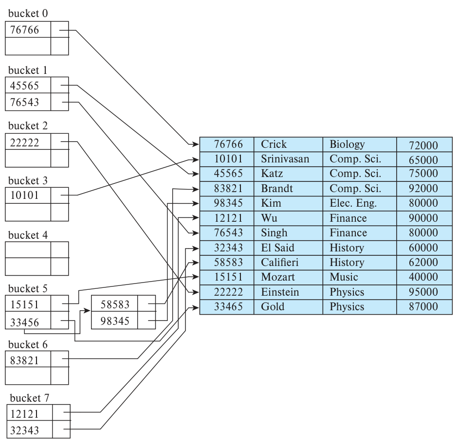
图 24.6 instructor 文件上以 ID 为搜索键的散列索引。 bucket 0—7 为八个桶，箭头由索引条目指向记录；记录列依次为教师编号、姓名、系名和工资。
译注：原图右侧 Gold 的编号印为 33465，左侧索引中为 33456；同一示例在后面的图中也使用 33456。正文说一个桶映射了三个键，但图中桶 5 连同溢出桶共有四个键。这里保留原图。
静态散列在创建索引时就固定了桶的集合。如果关系增长远超预期，长溢出链会使索引效率下降。可以用更多桶重建索引：当记录数超出估计值一定幅度时，触发重建，将桶数扩为原来的某个倍数，例如 1.5—2 倍。许多使用内存散列索引的系统确实这样做。
但关系较大时，重新索引大量记录会明显影响正常处理，对磁盘数据的影响更突出。下面介绍能够让索引逐步增长、避免这种集中干扰的动态散列技术。
24.5.1.1 散列函数
最差的散列函数把所有搜索键映射到同一个桶，所有记录都挤在一起，查找时只能逐条检查。理想的散列函数应把存储的键均匀分布到各桶，使每个桶拥有相同数量的记录。
设计时无法准确知道文件未来存储哪些键值，所以应选择使分布具备以下性质的散列函数：
- 均匀性。 对所有可能的搜索键值，各桶应分到相同数量的键值。
- 随机性。 不论实际搜索键如何分布，平均而言，各桶分到的值数量应大致相同。更准确地说，散列值不应与键的外在顺序相关，例如字母顺序或键长度顺序；散列结果应表现得像随机分配。
以 instructor 文件的 dept_name 为搜索键为例，选择的散列函数不仅要适合书中的小型示例，也要适合拥有许多系的大型大学的实际教师文件。
假设使用 26 个桶，将以字母表中第 i 个字母开头的系名映射到第 i 个桶。这种方法很简单，但不够均匀：以 B、R 等字母开头的名字，通常多于以 Q、X 开头的名字。
再考虑搜索键 salary。假设工资最低为 30,000 美元、最高为 130,000 美元，将工资分为十个区间：30,000—40,000、40,001—50,000，依此类推。这样的搜索键分布是均匀的，因为每桶对应的不同工资值数量相同，但缺乏随机性。工资在 60,001—70,000 之间的记录，可能远多于 30,001—40,000 之间的记录，导致各桶记录数不均。若散列分布具有随机性，即使键本身有这种相关性，只要单个键值没有占据大量记录，各桶仍很可能获得近似数量的记录。如果单个键值占比很大，那么无论选择什么散列函数，包含它的桶都可能比其他桶大。
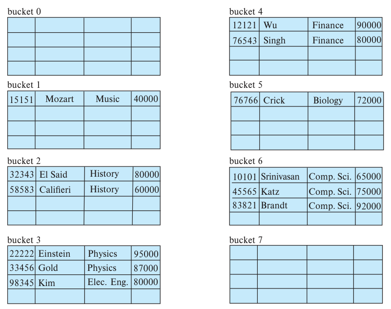
图 24.7 以 dept_name 为键的 instructor 文件散列组织。 bucket 为桶。各记录直接存于桶内，字段依次为教师编号、姓名、系名和工资。
译注：图 24.7 将 El Said 和 Califieri 的工资分别印为 80000、60000，与图 24.6 及后面的示例数据 60000、62000 不一致；原图保留。
常见散列函数对搜索键中字符的机器内部二进制表示进行计算。一种简单方法是将各字符的二进制值相加，再对桶数取模。
图 24.7 展示了把这种方法用于 instructor 文件、使用八个桶时的结果；这里假定字母表中第 i 个字母用整数 i 表示。
对字符串，可以采用更好的散列函数。设字符串 s 的长度为 n，s[i] 表示第 i 个字节，定义：
s[0] × 31n−1 + s[1] × 31n−2 + ⋯ + s[n−1]
实现时，将散列结果初始化为 0，从第一个字符遍历到最后一个字符，每步先乘以 31，再加上下一个字符的整数值。虽然这个表达式看起来会产生很大的数，实际计算使用固定位宽的非负整数，因此每次乘法和加法都会自动按“可表示的最大整数加 1”取模。最后再对桶数取模，即可用于索引。
散列函数需要仔细设计。设计不当时，查找时间可能与文件中的搜索键数量成正比；设计良好时，平均查找时间是一个较小的常数，与搜索键总数无关。
24.5.1.2 处理桶溢出
前面假设插入记录时，目标桶仍有空间。若空间不足，就发生桶溢出。14.5 节概述了它的几种原因：
- 桶数不足。 设桶数为 nB，待存记录总数为 nᵣ，每桶能容纳 fᵣ 条记录，应满足 nB > nᵣ/fᵣ。这种选择假定设定散列函数时已经知道总记录数。
- 倾斜。 有些桶获得的记录比其他桶多，因此即使别的桶仍有空间，某个桶也可能溢出。这称为桶倾斜，可能由以下两种原因引起。
- 多条记录拥有相同的搜索键。
- 所选散列函数造成搜索键分布不均。
为了降低溢出概率，通常取桶数为 (nᵣ/fᵣ)×(1+d)，其中 d 是预留余量，通常约为 0.2。这样会浪费部分空间，桶中约有 20% 的空间空置，但能降低溢出概率。
即使多分配一些桶，仍可能发生溢出。如 14.5 节所述，可以使用溢出桶，并略微修改查找算法，使其沿溢出链检查溢出桶，除了主桶之外也不遗漏这些记录。
上述结构称为封闭地址法（closed addressing），也较少称为 closed hashing。另一种方案称为开放地址法（open addressing），也较少称为 open hashing：桶集合固定，不设溢出链。桶满时，将记录插入原始桶集合 B 中的另一个桶。一种策略是按循环顺序寻找下一个有空间的桶，称为线性探测；也可以计算其他散列函数。开放地址法常用于编译器和汇编器的符号表，但数据库系统更倾向于封闭地址法，因为开放地址法中的删除处理较麻烦。编译器和汇编器通常只需对符号表做查找与插入。
数据库系统则需要同时支持插入和删除，因此开放地址法在数据库实现中的作用相对有限。
这种散列方法的重要缺点是：实现时必须选定散列函数，文件增长或缩小时难以调整。函数 h 将键映射到固定桶地址集合 B。若为未来增长预留过大的 B，就会浪费空间；若 B 太小，每桶会塞入许多不同键的记录并出现溢出，文件越大，性能越差。24.5.2 节讨论如何动态调整桶数与散列函数。
24.5.2 动态散列
上一节的静态散列必须固定桶地址集合 B，这带来了明显问题。多数数据库会随时间增长，采用静态散列时有三类选择：
- 按当前文件大小选择散列函数。随着数据库增长，性能会下降。
- 按预期未来某个时间点的文件大小选择散列函数。虽然能避免性能下降，但初期会浪费大量空间。
- 随文件增长定期重组散列结构。每次重组都要选择新散列函数，重新计算文件中每条记录的散列值，并重新分配桶。这是规模大、耗时长的操作，而且重组期间必须禁止访问文件。
若干动态散列技术允许根据数据库的增长或收缩动态修改散列函数。本节介绍其中的可扩展散列（extendable hashing），其他形式可参阅参考文献注释。
24.5.2.1 数据结构
可扩展散列随着数据库增长或收缩，分裂或合并桶，从而保持空间利用率。每次只重组一个桶，带来的性能开销也较低。
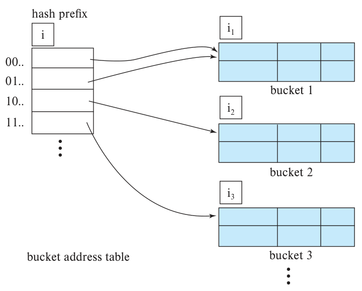
图 24.8 可扩展散列的一般结构。 bucket address table 为桶地址表，hash prefix 为散列前缀，bucket 为桶。i 表示地址表使用的前缀位数，i₁、i₂、i₃ 表示各桶记录共有的散列前缀长度。
可扩展散列选择兼具均匀性和随机性的散列函数 h，但它的输出范围较大，是 b 位二进制整数；b 通常取 32。
系统无须为每个散列值都建一个桶。2³² 超过 40 亿，除了规模最大的数据库，分配这么多桶都不合理。桶在记录插入时按需创建。开始时也不用散列值的全部 b 位：任意时刻只使用其中 i 位，0 ≤ i ≤ b，将其作为额外的桶地址表中的偏移。i 随数据库规模增减。
图 24.8 中，桶地址表上方的 i 表示，要用 h(K) 的 i 位才能确定键 K 对应的桶。文件增长时，这个数会改变。虽然需要 i 位定位表项，但多个连续表项可能指向同一桶。这些表项对应的散列前缀有共同部分，其长度可能小于 i。因此，每个桶还保存一个整数，表示这个共同前缀的长度；桶 j 的该值记为 iⱼ。指向桶 j 的地址表项数量为：
2i−iⱼ
24.5.2.2 查询与更新
下面介绍如何在可扩展散列结构上查找、插入和删除。
查找搜索键 Kₗ 所在的桶时，取 h(Kₗ) 的最高 i 位，根据这个位串查找桶地址表，再沿表项中的指针访问桶。
插入键为 Kₗ 的记录时，先按相同流程找到桶 j。有空位就直接插入；若桶已满，则分裂桶，将原记录与新记录重新分配。分裂前，需要先判断是否增加用于定位桶的散列位数。
若 i = iⱼ，桶地址表中只有一个表项指向 j。必须扩大地址表，才能分别指向分裂后的两个桶。将 i 加 1，多使用一位散列值，使地址表大小翻倍：每个旧表项变成两个表项，二者最初都保留原指针。此时有两个表项指向桶 j。再分配新桶 z，将其中第二个表项改为指向 z，并令 iⱼ、i_z 都等于新的 i。重新计算桶 j 中各记录的散列值，根据最高 i 位决定将它留在 j，还是移到新桶 z。
随后重新尝试插入新记录，通常就能成功。但如果原桶的所有记录与新记录有相同的散列前缀，它们仍会落入同一桶，需要继续分裂。散列函数选择合理时，单次插入很少需要多次分裂，除非大量记录拥有相同搜索键。如果桶内记录的搜索键完全相同，再怎么分裂也无济于事，只能像静态散列一样使用溢出桶。
若 i > iⱼ，多个地址表项指向 j，可以只分裂桶，无须扩大地址表。原来指向 j 的表项，对应前缀的最高 iⱼ 位都相同。分配新桶 z，将 iⱼ、i_z 都设为原 iⱼ 加 1，然后调整这些表项。增加前缀长度后，它们的最高 iⱼ 位不再全部相同。保留前半表项仍指向 j，将后半表项改为指向新桶 z。随后与前一种情况一样，重新计算原桶 j 中各记录的散列值，将其分配到 j 或 z。
系统再尝试插入。若少见地再次失败，就根据 i = iⱼ 或 i > iⱼ 的情况重复处理。
两种情况下，都只需重新计算桶 j 中记录的散列值。
删除搜索键 Kₗ 的记录时，同样先查找到桶 j，从桶中删除搜索键，并从文件中删除记录。桶变空时也将它删除。此时可能可以合并若干桶，并将桶地址表缩小一半。哪些桶可以合并、如何合并，以及何时能缩小地址表，留作练习。与桶合并相比，大地址表的缩放成本较高，因此可以等桶数明显减少后再缩小地址表。
下面用 instructor 文件演示插入，搜索键为 dept_name，32 位散列值见图 24.9。假定初始文件为空，如图 24.10，然后逐条插入记录。
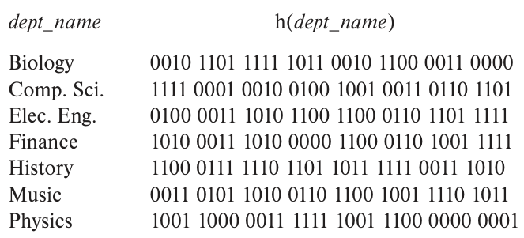
图 24.9 dept_name 的散列函数。 左列为系名，右列为各系名对应的 32 位散列值。Biology 为生物学，Comp. Sci. 为计算机科学，Elec. Eng. 为电气工程，Finance 为金融，History 为历史，Music 为音乐，Physics 为物理。
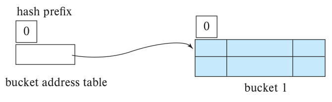
图 24.10 初始的可扩展散列结构。 桶地址表仅有一个指针，指向空桶；使用的散列前缀长度为 0。
为了在小结构中展示可扩展散列的各项特性，假定每个桶只能容纳两条记录，这与实际桶大小并不相符。
先插入 (10101, Srinivasan, Comp. Sci., 65000)。桶地址表只有一个指向唯一桶的指针，记录直接放入该桶。接着插入 (12121, Wu, Finance, 90000)，也放入同一桶。
插入第三条记录 (15151, Mozart, Music, 40000) 时，桶已满。由于 i = i₀，需要多使用一位散列值。现在使用 1 位，可区分 2¹ = 2 个桶，地址表也翻倍为两个表项。系统分裂原桶：散列值以 1 开头的记录放入新桶，其余记录留在原桶。分裂后的状态见图 24.11。
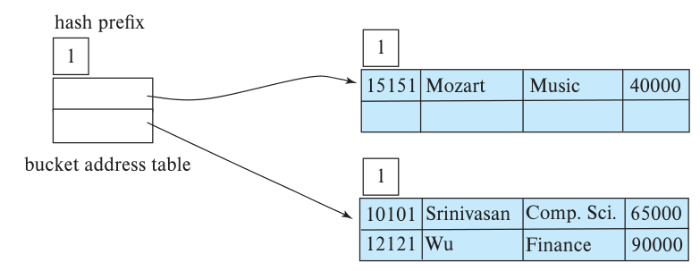
图 24.11 插入三条记录后的散列结构。 地址表使用一位前缀，分别指向 Music 所在桶以及 Comp. Sci.、Finance 所在桶。
接着插入 (22222, Einstein, Physics, 95000)。h(Physics) 的第一位是 1，因此记录应插入地址表中“1”表项指向的桶。该桶再次填满，且 i = i₁，于是使用两位散列值，地址表翻倍为四项，如图 24.12。图 24.11 中前缀为 0 的桶未分裂，因此 00 和 01 两个表项仍指向同一桶。
对图 24.11 中前缀为 1 的原桶，系统检查其中每条记录的散列值最高两位，决定放入新结构的哪个桶。
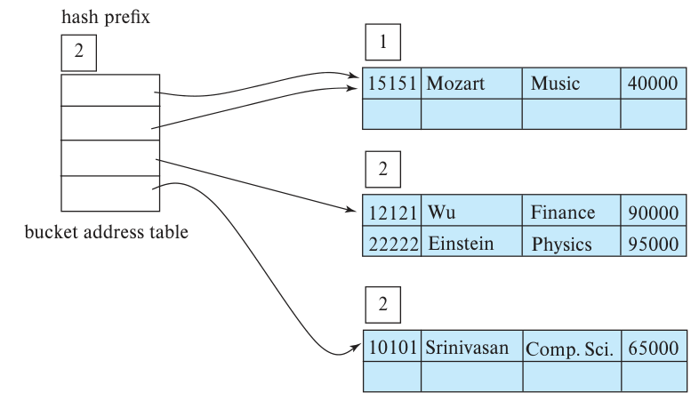
图 24.12 插入四条记录后的散列结构。 地址表使用两位前缀，原先以 1 开头的桶已分裂。
接着插入 (32343, El Said, History, 60000)，它与 Comp. Sci. 放入同一桶。再插入 (33456, Gold, Physics, 87000) 时发生溢出，需要增加前缀位数并使地址表翻倍，结果见图 24.13。
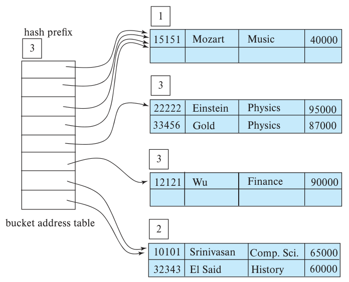
图 24.13 插入六条记录后的散列结构。 地址表使用三位前缀，Physics 对应的两条记录在同一桶中。
插入 (45565, Katz, Comp. Sci., 75000) 又导致溢出。不过，这个桶有两个地址表项指向它，可以直接分裂，无须增加前缀位数，结果见图 24.14。
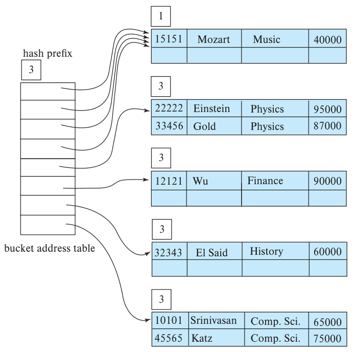
图 24.14 插入七条记录后的散列结构。 Comp. Sci. 与 History 被分到不同桶，地址表大小保持不变。
再插入 Califieri、Singh 和 Crick 的记录时，都没有溢出。随后插入第三条 Comp. Sci. 记录，即 (83821, Brandt, Comp. Sci., 92000)。
这次插入产生了溢出，增加前缀位数也无法解决，因为三条记录的散列值完全相同。系统因此使用溢出桶，如图 24.15。继续插入图 14.1 的所有教师记录，最终结构如图 24.16。
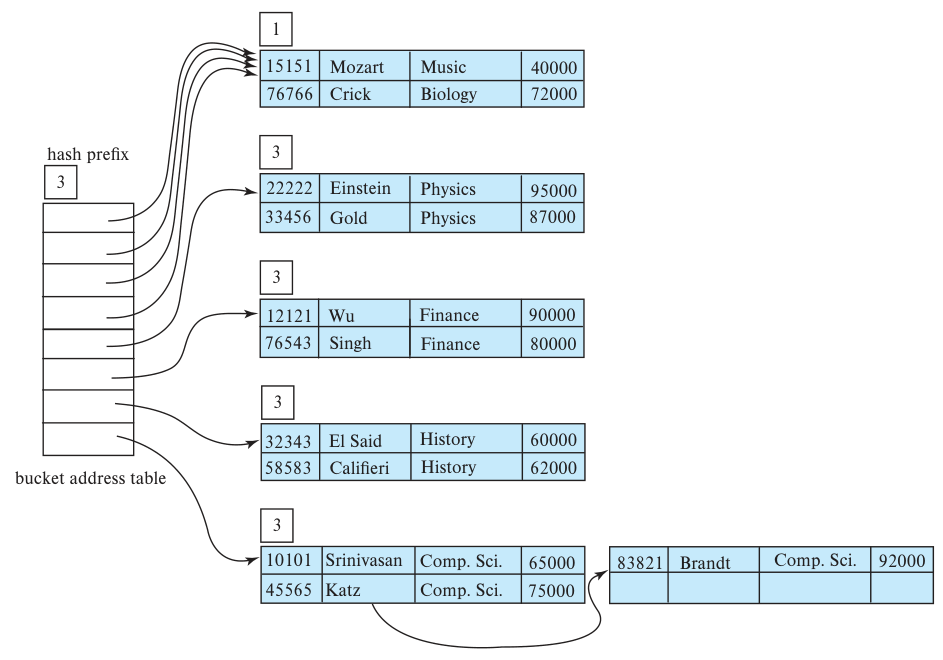
图 24.15 插入十一条记录后的散列结构。 Comp. Sci. 的第三条记录通过溢出桶保存。
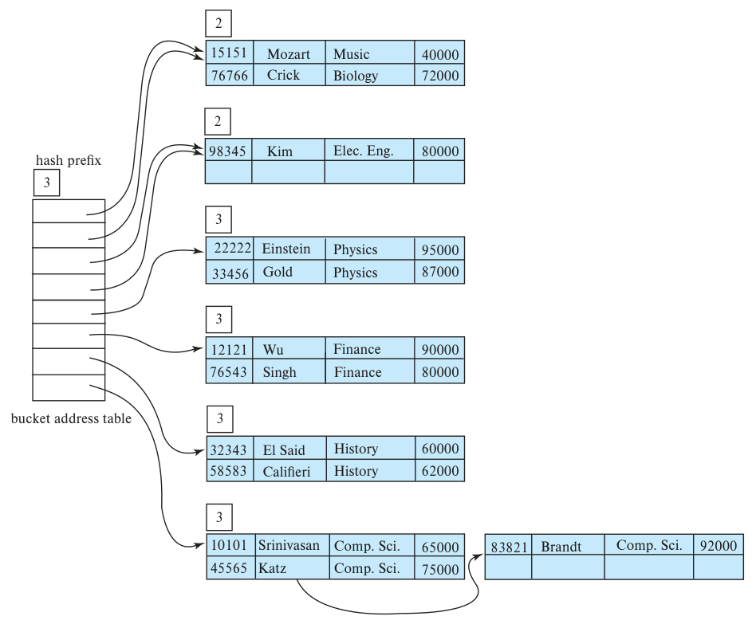
图 24.16 instructor 文件的可扩展散列结构。 最后一条 Elec. Eng. 记录使原先共享前缀 0 的桶进一步分裂；地址表仍使用三位前缀。各图的 bucket address table 为桶地址表，hash prefix 为散列前缀；桶内数据列为教师编号、姓名、系名和工资。
24.5.2.3 静态散列与动态散列的比较
与静态散列相比，可扩展散列的主要优点是性能不会随文件增长而下降，额外空间开销也较小。虽然桶地址表带来额外成本，但它只为当前前缀长度下的每个散列值保存一个指针，因此表较小。可扩展散列相对于其他散列形式的主要空间收益，是无须为未来增长预留桶，可以按需动态分配。
它的一个缺点是查找多了一层间接访问：必须先访问桶地址表，再访问桶。
这次额外访问对性能的影响较小。24.5.1 节的静态结构没有这一层间接访问，但随着桶逐渐填满，其轻微性能优势也会消失。可扩展散列的另一个缺点，是需要不时将桶地址表翻倍，产生相应成本。
参考文献注释还介绍了另一种动态散列方法——线性散列（linear hashing）。它避免了可扩展散列的额外间接访问，但可能需要更多溢出桶。
24.5.3 有序索引与散列的比较
我们已经介绍了多种有序索引和散列方案。记录文件可以采用索引顺序组织或 B+ 树组织，形成有序文件；也可以使用散列组织；还可以采用堆文件，不按任何特定次序排列记录。
每种方案都有合适的场景。数据库系统实现者可以提供多种方案，让数据库设计者决定使用哪种，但这需要编写更多代码，增加系统成本和占用空间。
多数数据库系统支持用 B+ 树索引磁盘数据，许多系统还支持 B+ 树文件组织。但多数数据库不为磁盘数据提供散列文件组织或散列索引。原因之一是许多应用需要范围查询；其次，B+ 树通过一系列低成本的节点分裂平缓地适应关系增长，而可扩展散列的地址表翻倍成本相对较高；此外，对于重复键上的删除操作，B+ 树能给出良好的最坏情况时间界限，散列索引则做不到。
如果范围查询较少，散列索引仍常用于内存索引。特别是在 15.5.5 节的散列连接处理中，系统广泛使用临时内存散列索引。
24.6 小结
- 日志结构合并树用较少的顺序 I/O 替代插入、更新和删除时的随机 I/O。
- 位图索引是一种方便按多个键查询的专用索引，最适合不同取值数量较少的属性。
- 位图是位数组。最简单的位图索引，为关系 r 的属性 A 的每个可能取值创建一张位图，每张位图的位数与关系记录数相同。
- 位图索引主要对多个键上的联合选择有用。
- 位图还可用来统计满足选择条件的元组数，这对数据分析很重要。
- 高效访问空间数据需要专门索引，支持范围查询和最近邻查询等操作。
- 四叉树通过递归划分空间来表示二维数据，每个节点对应一个矩形区域。
- R 树适合索引点、线段、矩形和其他多边形。它与 B+ 树一样是平衡树，对象存于叶节点；各节点关联一个矩形包围盒。
- 静态散列的桶地址集合固定，难以适应随时间显著增长的数据库。
- 动态散列允许修改散列函数。可扩展散列就是其中一种，它通过分裂和合并桶来适应数据库的增长与收缩。
复习术语
- 日志结构合并树（LSM 树）
- 滚动合并
- 删除条目
- 分级合并索引
- 写放大
- 布隆过滤器
- 位图
- 位图索引
- 存在位图
- 四叉树
- 区域四叉树
- R 树
- 包围盒
- 二次分裂
- 桶溢出
- 倾斜
- 封闭地址法（closed addressing）
- 封闭散列（closed hashing）
- 开放地址法（open addressing）
- 开放散列（open hashing）
- 动态散列
- 可扩展散列
- 线性散列
实践习题
24.1 与普通 B+ 树相比，LSM 树和 14.8.2 节介绍的缓冲树都能改善写密集型负载，缓冲树还有可能提供更好的查找性能。但大数据环境中更常使用 LSM 树，最主要的原因是什么？
24.2 考虑用查表方法加速统计位图中 1 的个数。把缓存大小也考虑在内，选择较小或较大的查表数组，各有什么取舍？
24.3 假设要用 R 树存储线段。如果线段不与坐标轴平行，它的包围盒可能很大，包含大量空白区域。
- 查询与某个区域相交的线段时，较大的包围盒对性能有什么影响？
- 简述一种改善这类查询性能的方法，并举例说明其收益。提示：可以把线段切成较短的片段。
24.4 给出一种 R 树搜索算法，高效找出给定查询点的最近邻。
24.5 给出一个递归过程，高效计算两个具有 R 树索引的关系的空间连接。提示：利用包围盒判断一对内部节点下的叶条目是否可能相交。
24.6 假设文件采用可扩展散列，记录的搜索键值为：
2，3，5，7，11，17，19，23，29，31
散列函数为 h(x) = x mod 8，每桶可容纳三条记录。画出该文件的可扩展散列结构。
24.7 依次执行下列步骤，分别画出习题 24.6 的可扩展散列结构如何变化：
a. 删除 11。
b. 删除 31。
c. 插入 1。
d. 插入 15。
24.8 写出从可扩展散列结构中删除条目的伪代码，包括何时合并桶以及如何合并的细节。不必考虑缩小桶地址表。
译注：原题中的
fromAVi含有多余文字，此处按from的语义翻译。
24.9 在桶地址表中额外保存一个计数，设计一种高效方法，检测可扩展散列的地址表是否可以缩小。说明桶分裂、合并或删除时如何维护该计数。注意，缩小地址表成本较高，后续插入又可能使它增长，因此不宜一满足条件就缩小；更合适的做法是等索引条目数相对于地址表大小已经很少时再缩小。
习题
24.10 LSM 树的分级合并变体允许每层存在多棵树。每层允许更多树会带来哪些取舍？
24.11 将四叉树的思路用于三维数据时，得到的结构称为八叉树（octtree）。它应如何划分空间？
24.12 解释封闭散列与开放散列的区别，讨论它们在数据库应用中的相对优点。
24.13 散列文件组织中，桶溢出的原因有哪些？可以采取什么措施降低溢出发生的频率？
24.14 若某个搜索键经常用于范围查询，为什么散列结构通常不是最佳选择？
24.15 对静态散列的介绍假定能够为散列表分配一大片连续磁盘块。假设最多只能分配 C 个连续块，但散列表可能远大于 C 个块，应如何实现？访问任意块仍应保持高效。
进一步阅读
[O’Neil et al. (1996)] 提出了日志结构合并树，[Jagadish et al. (1997)] 提出了分级合并树。[Vitter (2001)] 广泛综述了外存数据结构与算法。
[O’Neil and Quass (1997)] 介绍了位图索引。位图索引最初用于 AS 400 平台上的 IBM Model 204 文件管理器。
它能显著加速某些类型的查询，目前多数数据库系统都实现了这一技术。
[Samet (2006)] 是介绍空间数据结构的教材。[Bentley (1975)] 介绍 k-d 树，[Robinson (1981)] 介绍 k-d-B 树。R 树最早由 [Guttman (1984)] 提出。
散列的基本数据结构可参阅 [Cormen et al. (2009)]。可扩展散列由 [Fagin et al. (1979)] 提出，线性散列由 [Litwin (1978)] 和 [Litwin (1980)] 提出。
参考文献
[Bentley (1975)] J. L. Bentley, “Multidimensional Binary Search Trees Used for Associative Searching”, Communications of the ACM, Volume 18, Number 9 (1975), pages 509–517.
题名译文：用于关联搜索的多维二叉搜索树。
[Cormen et al. (2009)] T. Cormen, C. Leiserson, R. Rivest, and C. Stein, Introduction to Algorithms, 3rd edition, MIT Press (2009).
题名译文：算法导论，第3版。
[Fagin et al. (1979)] R. Fagin, J. Nievergelt, N. Pippenger, and H. R. Strong, “Extendible Hashing — A Fast Access Method for Dynamic Files”, ACM Transactions on Database Systems, Volume 4, Number 3 (1979), pages 315–344.
题名译文：可扩展散列：动态文件的快速访问方法。
[Guttman (1984)] A. Guttman, “R-Trees: A Dynamic Index Structure for Spatial Searching”, In Proc. of the ACM SIGMOD Conf. on Management of Data (1984), pages 47–57.
题名译文：R树：用于空间搜索的动态索引结构。
[Jagadish et al. (1997)] H. V. Jagadish, P. P. S. Narayan, S. Seshadri, S. Sudarshan, and R. Kanneganti, “Incremental Organization for Data Recording and Warehousing”, In Proceedings of the 23rd International Conference on Very Large Data Bases, VLDB ’97 (1997), pages 16–25.
题名译文：用于数据记录和数据仓储的增量组织。
[Litwin (1978)] W. Litwin, “Virtual Hashing: A Dynamically Changing Hashing”, In Proc. of the International Conf. on Very Large Databases (1978), pages 517–523.
题名译文：虚拟散列：一种动态变化的散列方法。
[Litwin (1980)] W. Litwin, “Linear Hashing: A New Tool for File and Table Addressing”, In Proc. of the International Conf. on Very Large Databases (1980), pages 212–223.
题名译文：线性散列：文件和表寻址的新工具。
[O’Neil and Quass (1997)] P. O’Neil and D. Quass, “Improved Query Performance with Variant Indexes”, In Proc. of the ACM SIGMOD Conf. on Management of Data (1997), pages 38–49.
题名译文：使用变体索引改善查询性能。
[O’Neil et al. (1996)] P. O’Neil, E. Cheng, D. Gawlick, and E. O’Neil, “The Log-structured Merge-tree (LSM-tree)”, Acta Inf., Volume 33, Number 4 (1996), pages 351–385.
题名译文：日志结构合并树（LSM树）。
[Robinson (1981)] J. Robinson, “The k-d-B Tree: A Search Structure for Large Multidimensional Indexes”, In Proc. of the ACM SIGMOD Conf. on Management of Data (1981), pages 10–18.
题名译文：k-d-B树：大型多维索引的搜索结构。
[Samet (2006)] H. Samet, Foundations of Multidimensional and Metric Data Structures, Morgan Kaufmann (2006).
题名译文：多维与度量数据结构基础。
[Vitter (2001)] J. S. Vitter, “External Memory Algorithms and Data Structures: Dealing with Massive Data”, ACM Computing Surveys, Volume 33, (2001), pages 209–271.
题名译文：外存算法与数据结构：应对海量数据。
图片来源
本章开头的帆船照片版权为 © Pavel Nesvadba/Shutterstock。